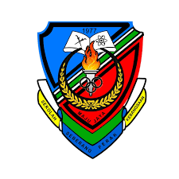

My Education 🎓

Diploma in Information Management
Universiti Teknologi MARA (UiTM) | 2026Studied a lot of things such as Library, Archive, Software development and others.

Sijil Pelajaran Malaysia (SPM)
SMK Sultan Abdul Jalil Shah | 2022Focused on economics and business subjects. Others 6 subjects was pass with excellent.

Ujian Penilaian Sekolah Rendah (UPSR)
SK Seberang Perak | 2016Completed certifications and all 6 subjects was pass including science, math and others subjects.
Ujian Sijil Rendah Agama Islam (SRAI)
Sekolah Rendah Agama Raayat Al Muhajirin | 2016Focused on 6 subjects about islamic which is History, Manners, Quran and others subject.
Ujian Penilaian Kelas KAFA (UPKK)
Sekolah Rendah Agama Raayat Al Muhajirin | 2015Focused on 8 subjects about islamic which is reading quran, history, prayers practice and others.